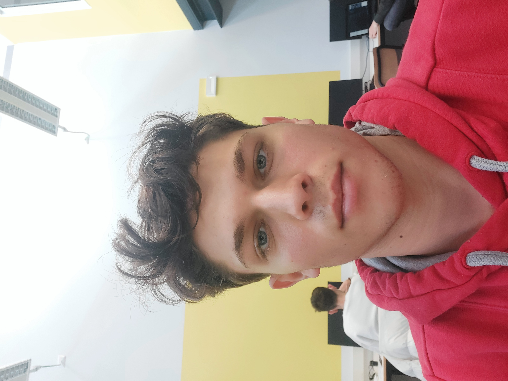

LUCA BORTOLUZZI
- Via A.Volta 40, Grugliasco(TO)
- lbortoluzzi2004@gmail.com
- +39 3921094721
profilo
Estroso neodiplomato in Informatica, con
il punteggio di ?/100 presso Istituto
Internazionale E. Agnelli. Ho già fatto esperienza in una azienda
e il mio supervisore ha dato un feedback positivo.
Sono alla ricerca di una posizione lavorativo nel campo del networkinge dello sviluppo web.
esperienze
ITI presso Istituto Internazionale E.Agnelli
Ho frequentato 5 anni presso l'ITI Agnelli conseguendo il diploma di Perito Informatico
con
specializzazione sviluppo software e reti. Nel percorso ho frequentato diversi corsi di
specializzazione su argomenti specifici come lo sviluppo web e la programmazione in
JavaScript.
Scuole Medie presso La Salle Grugliasco
Ho frequentato 3 anni presso l'istituto salesiano La Salle a Grugliasco. Nel corso del triennio
oltre
alle materie curriculari abbiamo seguito vari corsi di approfondimento su tematiche legate al
mondo del futuro e del lavoro.
certificazioni
ECDL
Ho conseguito la certificazione ECDL, ho aquisito buone competenze per la gestione
di tutti i sistemi Office.